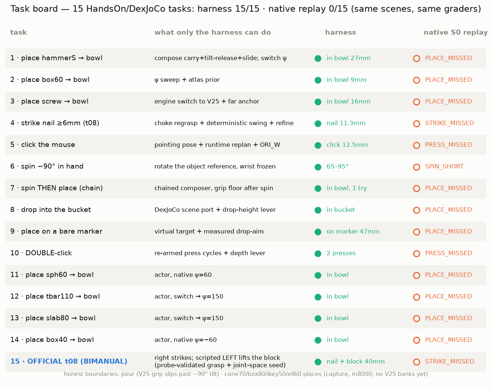

The control: every task also ran as a no-harness baseline — the same scene, same spawn, same grader, with S0 tracking its native clip through the same bridge, but no S2 composition, no replanning, no retries. A native clip only ever picks the object up and sets it back down: it contains no bowl, nail, button, spin, pour, bucket or marker. Baseline: 0/15. Harness (Tianji M6-CCS + wuji2, extension-floored hand): 15/15, ≤3 attempts each — including the first BIMANUAL task: the official t08 criterion (nail ≥6mm AND wood block lifted ≥30mm; the right arm strikes, the scripted left arm lifts the block).

official t08: nail 11.3mm + block lifted 40.5mm — the left grasp was cracked by a standalone physics probe (8 trials at ~3s each found palm 85mm above block base, 45mm behind center, moderate curl → 76mm probe lift), then three integration fixes: freeze the right reference at its end, a frame-correct clear-away so the arms never share the corridor, and a joint-space seed posture that keeps the left IK out of the vertical-start branch trap. · plus four new objects placed (sph60, tbar110, slab80, box40 — two needed ψ switches).
spin→place chain (first try) · box60 into the DexJoCo bucket · precision place on a bare-table marker (47mm — measured drop-aim, no receptacle to catch it) · double-click (2 distinct presses) · and the honest 11th: the mug pour — V25 captures and tilts past ~90° but the grip slips before the 105° criterion (grip-retention boundary, evidence in the atlas).
Three harness layers do the work: composition (the reference the policy tracks is written by S2 — carry/drop/tilt/slide, choke+swing, spin, press cycles — none of which exist in any clip), measured replanning (live drop-aim, pre-stroke strike refine, fingertip-vs-button), and the actor ladder (ψ sweep + atlas prior, engine switch, typed-failure levers). Found and fixed during this board: generated gap-training clips had leaked into nominal reference selection — the data-side twin of the scene_rev rule (training variants are never deployment references).
Boards: Tianji campaign · framework flowcharts · plan + Figure 2